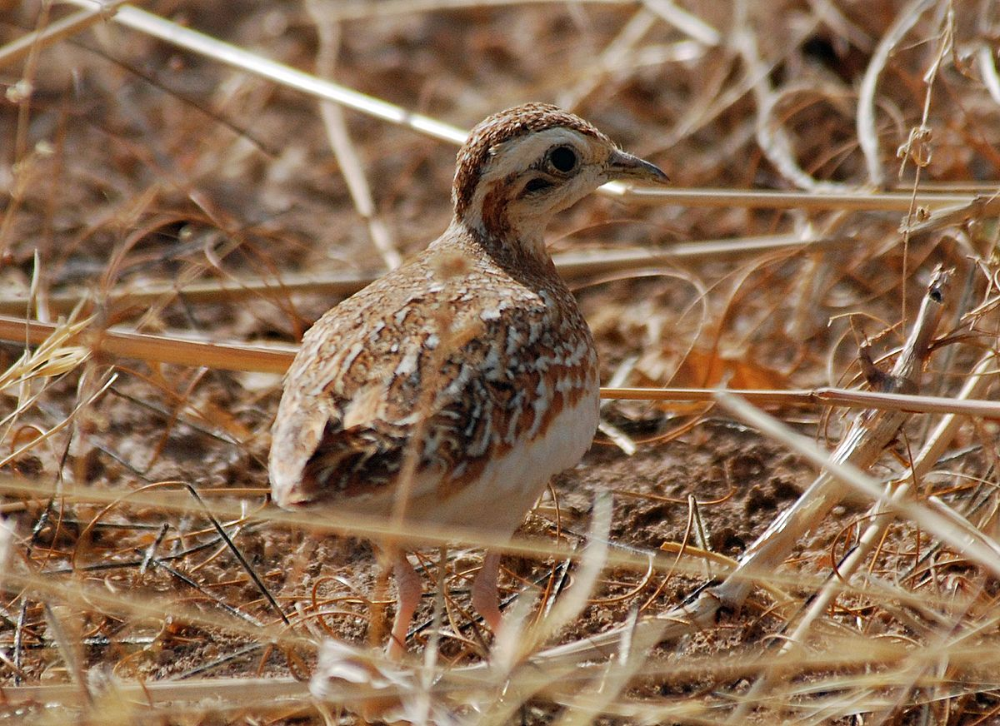

Ortyxelos meiffrenii
The small Quail Plover is a small species of button-quail in the family Turnicidae. It's upperparts are a rufous and the underparts mostly white. They show a distinctive wing pattern in flight. It is usually found singly or in pairs in dry grassland or thorn scrub.